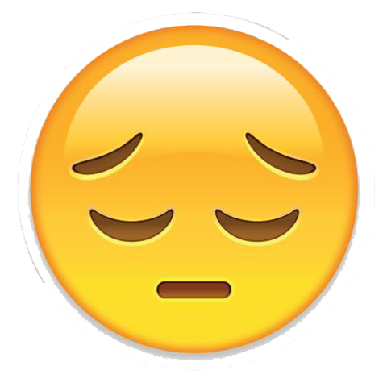

Hi {{name}}
You just entered the message {{message}}
{% if prediction=="positive" %}
Seems like you have a very positive approach towards online learning experience.
{% endif %}
{% if prediction=="negative" %}
Seems like you are disappointed by the online learning experience.

{% endif %}